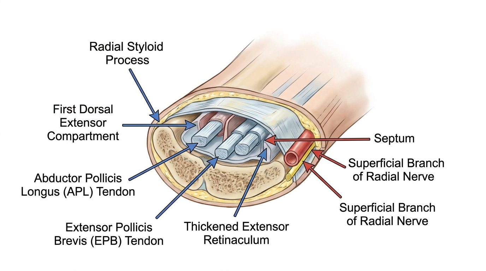

드퀘르뱅 건초염(De Quervain's Tenosynovitis), 요골 경상돌기 부위 제1신전건 구획 협착의 병리와 도침 치료
드퀘르뱅 건초염은 요골 경상돌기 부위 제1신전건 구획 내에서 무지외전근(APL)과 단무지신전근(EPB) 건이 신전지대의 병리적 비후로 인해 물리적으로 협착되는 질환입니다. 이는 굴곡건 활차 부위의 방아쇠수지, 정중신경 압박에 의한 손목터널증후군과는 발생 위치와 기전이 명확히 구분되는 별개의 병태생리를 가집니다.
제1신전건 구획의 해부학적 구조와 협착성 병변의 병리기전
드퀘르뱅 건초염은 요골 경상돌기 배측에 위치한 제1신전건 구획(first dorsal compartment)에서 발생하는 기계적 협착성 병변으로, 이 구획 내에는 무지외전근(abductor pollicis longus, APL)과 단무지신전근(extensor pollicis brevis, EPB) 건이 함께 주행한다. 이 두 건은 신전지대(extensor retinaculum)라는 섬유성 띠로 덮인 섬유골성 터널(fibro-osseous tunnel)을 공유하며, 손목의 반복적인 요척측 편위(radial/ulnar deviation)와 무지 외전 동작이 결합될 경우 건과 건막(tendon sheath) 사이의 마찰 응력이 지속적으로 발생한다. 실제 사체 표본을 대상으로 시행된 생체역학 분석 연구는 손목의 굴곡 및 신전 시 APL과 EPB 건이 요골 경상돌기의 골성 능선(bone ridge)에서 발생하는 마찰 응력을 정량적으로 규명하였으며, 이는 문자 입력, 강한 파지 동작, 물건 들어올리기 등 반복적인 무지 사용이 신전지대의 병리적 비후를 유발하는 기전을 뒷받침한다[2]. 이러한 마찰 응력의 누적은 신전지대 자체의 두께 증가와 섬유골성 터널의 내경 축소를 초래하며, 결과적으로 건과 건초 사이의 공간적 불일치(tendon-sheath mismatch)가 발생하여 국소 부종과 함께 무지 및 손목 운동 시 통증성 활주 제한(painful gliding restriction)이 나타난다.
격막(septum)에 의한 아구획 형성과 감별진단의 임상적 기준

드퀘르뱅 건초염의 임상 양상을 복잡하게 만드는 주요 요인 중 하나는 제1신전건 구획 내부에 격막(septum)이 존재하여 APL과 EPB 건을 각각 별도의 아구획(subcompartment)으로 분리하는 해부학적 변이이다. 이러한 격막 변이가 존재하는 경우 두 건이 독립된 공간에서 개별적으로 협착되므로, 단일 구획으로 접근하는 일반적인 치료 방식만으로는 충분한 감압 효과를 얻기 어려울 수 있다. 임상적으로 드퀘르뱅 건초염은 핀켈스타인 검사(Finkelstein test) 및 아이호프 검사(Eichhoff test) 양성 소견, 요골 경상돌기 부위의 촉지 가능한 비후, 그리고 초음파 검사상 격막 변이 및 건초 비후의 확인을 통해 진단된다. 이는 제2신전건 구획 부위에서 발생하는 교차증후군(intersection syndrome)이나 제1수근중수관절(first CMC joint)의 골관절염과 통증 부위 및 유발 검사 반응이 상이하므로 명확한 감별이 요구되는 부분이다. 특히 교차증후군은 통증 위치가 요골 경상돌기보다 근위부에서 나타나며, 제1수근중수관절 골관절염은 관절 자체의 압통과 마찰음이 특징적이라는 점에서 병력 청취와 이학적 검사를 통한 구분이 필수적이다.
도침을 이용한 신전지대 종적 절개술의 시술 원리와 신경혈관 보존 기법
도침(acupotomy)을 이용한 제1신전건 구획 감압술은 비후된 신전지대를 종적으로 절개하여 섬유골성 터널 내부의 압력을 물리적으로 낮추는 시술이다. 침도 시술 시 진입점은 요골 경상돌기와 해부학적 코담배갑(anatomical snuffbox)의 위치 관계를 기준으로 설정되며, 도침의 날 방향은 건 섬유의 주행 방향과 평행하게 유지하여 요골동맥 및 요골신경 표재분지(superficial branch of the radial nerve)의 손상 가능성을 최소화하는 방식으로 시행된다. 본 임상시험은 요골 경상돌기 부위에서 발생하는 제1신전건 구획의 협착성 병변에 대해 초음파 유도하 침도 시술의 적용 가능성을 다루고 있으며, 이는 무지외전근과 단무지신전근이 함께 주행하는 섬유골성 통로의 감압 원리와 직접적으로 연관된다. 침도를 이용한 종적 절개 술식은 신전지대의 병리적 비후를 정밀하게 해리하여 건초와 건 사이의 마찰 저항을 감소시키는 기전으로 작용하며, 이는 신경혈관 손상을 방지하기 위해 요골동맥 및 요골신경 표재분지의 해부학적 주행을 고려한 정밀한 접근이 필수적임을 시사한다[1]. 이러한 피하 종적 절개 기법은 건의 아탈구 안정성(tendon subluxation stability)을 유지하면서도 APL/EPB 터널 내부의 공간을 효과적으로 확보하도록 설계된다.
피질하 감압 이후 건 활주 회복과 무지-손목 생체역학의 정상화 기전
바디올한의원의 누적 도침 시술 임상 경험에서 관찰되는 제1신전건 구획 내 압력 완화 경향은, 인용된 학술 연구[2]에서 입증된 건 활주 회복 및 구획 내 압력 감소라는 감압 기전과 학술적으로 궤를 함께합니다.
제1신전건 구획의 정밀한 감압이 이루어진 이후에는 APL과 EPB 건의 활주 저항이 감소하여 무지 외전 및 신전 동작 시 정상적인 건 이동 거리(tendon excursion)가 회복될 수 있다. 사체 및 임상 연구는 초음파 유도 여부에 관계없이 경피적 종적 절개 술식이 신경혈관 손상 없이 시행 가능하였으며, 시술 후 통증 시각척도(VAS) 및 손목 기능 평가(PRWEB) 점수의 유의한 개선이 관찰되어 건 활주 회복과 구획 내 압력 감소라는 감압 기전을 뒷받침한다는 점을 확인하였다. 이러한 결과는 격막에 의해 세분화된 APL/EPB 구획의 정밀한 감압이 무지 및 손목의 정상적 생체역학 회복에 기여할 수 있다는 점에서 임상적 의의를 가진다. 이와 같은 원리에 근거하여 도침을 이용한 감압 시술은 수술적 개방 절개를 시행하기 전 안전하게 고려할 수 있는 비수술적 보존 치료 대안 중 하나로 평가된다.
진단 감별을 위한 주요 검사 소견 비교
| 구분 | 드퀘르뱅 건초염 | 교차증후군 | 제1CMC관절 골관절염 |
|---|---|---|---|
| 주요 통증 위치 | 요골 경상돌기 | 전완 원위 배측 (근위부) | 손목-엄지 기저 관절 |
| 핀켈스타인 검사 | 양성 | 대체로 음성 | 음성 |
| 초음파 소견 | 건초 비후, 격막 변이 | 건 교차부 염증 | 관절 간격 협소 |
| 촉지 소견 | 경상돌기 부위 비후 | 근위부 마찰음 | 관절 자체 압통 |
자주 묻는 질문
💡 Q. 도침 시술 시 요골신경 손상 위험은 없나요?
도침의 날 방향을 건 섬유 주행과 평행하게 유지하고 요골 경상돌기 및 해부학적 코담배갑의 해부학적 지표를 기준으로 진입점을 설정하는 방식은 요골동맥 및 요골신경 표재분지의 손상 가능성을 최소화하도록 설계된 술식이다. 다만 정밀한 해부학적 이해와 숙련도가 요구되는 시술이므로 반드시 전문 의료기관에서 시행되어야 한다.
💡 Q. 격막이 있는 경우 시술 접근법이 달라지나요?
격막에 의해 APL과 EPB 건이 별도의 아구획으로 분리된 경우, 각 아구획을 개별적으로 인지하고 감압하는 정밀한 접근이 요구될 수 있다. 초음파를 통한 사전 격막 변이 확인이 시술 설계에 중요한 참고 자료로 활용된다.
참고문헌
- Xue, et al. (2024), 'Ultrasound-guided needle knife release', http://isrctn.com/. DOI: 10.1186/isrctn11819634
- Shen, et al. (2023), 'The ultrasound-guided percutaneous release technique for De Quervain's disease using an acupotomy', Frontiers in Surgery. DOI: 10.3389/fsurg.2022.1034716